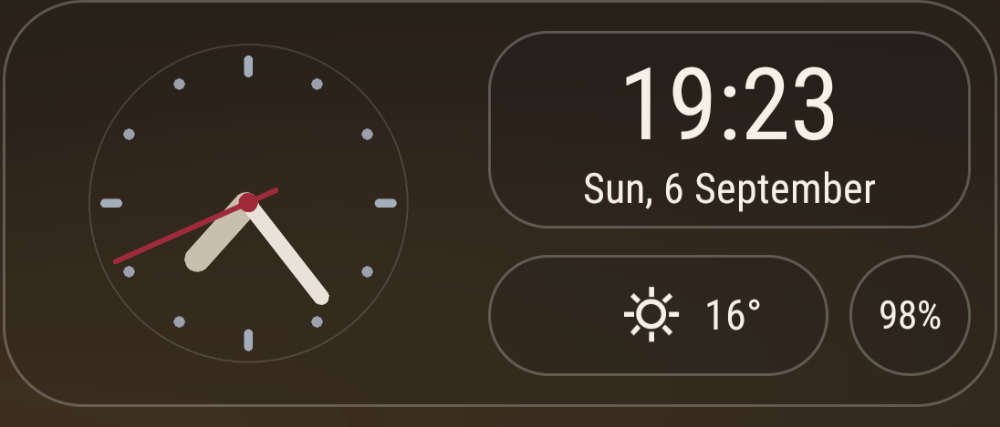

Analog clock
The hands are moved by Android itself, so the widget costs no battery.

A glass clock for the Android home screen.
Every layout, every drawable, every byte of logic was generated by AI — Claude Opus 4.8 — through plain conversation. No human wrote a line. No Android Studio, no Gradle.
On the card
The hands are moved by Android itself, so the widget costs no battery.
Formatted in the app's own language, not the phone's.
Sky icon and temperature from Open-Meteo, by your location, refreshed in the background.
Read locally. No permission asked, none needed.
Tap zones
Any of the five zones can be re-pointed to any app you like through the system picker, and reset back with one tap.
Make it yours
Dimming from ten to ninety percent, a gradient in five directions, or full transparency.
Seven colours — bone, graphite, Monet, carmine, steel, brass, warm bone.
Auto, 24-hour, or 12-hour.
Fifteen flags on the first screen, or follow the system.
How it's made
This is not a Gradle project. There is no Java source. The logic lives as smali — Dalvik bytecode written by hand — compiled with apktool and aapt, then signed with apksigner. The whole thing was assembled on a phone, in conversation.
# build, then repack with resources.arsc stored (Android 11+) apktool b src -o meno.apk zip -X -0 meno.apk AndroidManifest.xml resources.arsc zip -X -r meno.apk classes.dex res apksigner sign --ks shumtugle.keystore meno.apk
The full source tree, the build notes, and the scars are in the repository.
Permissions